<ul class='kwicks kwicks-horizontal intro_wrap'>

    <li id="panel-2">
        <div class="bg-1" style="background:url(images/common/7.jpg) no-repeat;background-position: 50% 0%;background-size: auto 104%;"></div>
        <div class="inner_bg"></div>
        <div class="logo_box">			
            <a href="https://etoilepoolvilla.kr/main.html" target="_blank">
                <!--img src="http://image.trip11.co.kr/himongkids.kr/assets/images/main/1.jpg" /-->
                <p class="title"></p>
                <!--p>에뚜알풀빌라A/p-->
            </a>		
        </div>				
    </li>
    <li id="panel-3">
        <div class="bg-2" style="background:url(images/common/8.jpg) no-repeat;background-position: 50% 50%;background-size: auto 105%;"></div>
        <div class="inner_bg"></div>
        <div class="logo_box">
            <a href="https://etoilepoolvilla.co.kr/main.html" target="_blank">
                <!--img src="http://image.trip11.co.kr/soraedang.kr/assets/images/main/1.jpg" /-->
                <p class="title"></p>
                <!--p>에뚜알풀빌라B</p-->
            </a>
        </div>				
    </li>

</ul>
<link rel="stylesheet" href="css/board_black.css">
<link rel="stylesheet" href="css/jquery.kwicks.css">
<link rel="stylesheet" href="css/reset.css">
<link rel="stylesheet" href="css/style.css">
<script src="http://ajax.googleapis.com/ajax/libs/jquery/1.8.1/jquery.min.js"></script>
<script src="/js/jquery.kwicks.js"></script>
<script src="/js/jquery.easing.1.3"></script>
<script type='text/javascript'>
     $(function() {
            function applyKwicks() {
                if ($(window).width() > 1024) {
                    $('.kwicks').kwicks({
                        maxSize: '55%',
                        behavior: 'menu'
                    });
                } else {
                    $('.kwicks').kwicks('destroy'); // 1024px 이하에서 플러그인 비활성화
                    $('.kwicks > *').css('width', '100%'); // 1024px 이하에서 너비 100%로 설정
                }
            }

            // 초기 로드 시 호출
            applyKwicks();

            // 윈도우 리사이즈 시 호출
            $(window).resize(function() {
                applyKwicks();
            });
        });

</script>
</body>
</html>


